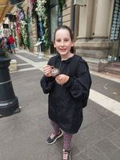
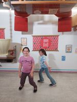
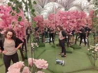
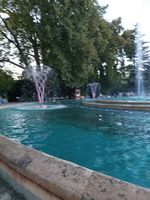
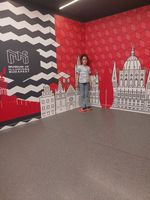

17 of 20 picks identical. Below are the 3 that changed: red = baseline chose, green = fused chose. Same moment, different best-frame after the scene regrouping. Your call: is each green pick as good or better than the red one it replaced?




